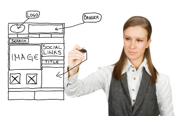

You want to run a business out of your home or a storefront, but you need a sales and marketing plan. The Web can be your most effective, tireless 24x7 salesperson. Here are some tips to turn your Web site into an effective marketing tool:
Avoid using blinking, flashing, scrolling, and crawling text. These are only suitable for a whimsical Web site. Choose a readable font in a size that's easy to read. Stick to one font face and not more than three font sizes. It may be interesting to have 10 different font faces on your site, but having too many font faces tends to detract from your site, not enhance it. Your Web site should not look like a the Web Designer couldn't decide which font size to use! Use neutral tones or colors that complement each other. Avoid red and green color combinations — 5% of the population is color blind and may have trouble reading such text. Red is also associated with danger and financial loss.
At the top of your page, state what your company can do for the customer. Why are you the best? Why should the customer use your services? What makes you so special? Why should the customer buy your goods or use your services? Make these reasons clear from the start and at the top.
Don't make the customer have to search for contact information. That's a great way to kill a sale, not create one. Make sure your contact information is easy to find. Have your address, phone number, fax number, email address and link at the top and the bottom of every page.
Photos should be the right size (not more than 3 inches by 3 inches) and not be distorted. Your photos should not look like a fun house mirror. Background graphics should contrast with, not compete with, text. If you have a lot of photos, create thumbnail images (about 1 - 1 1/2 inches square) that link to larger-size images. Having the large images on separate pages means your home page will download faster.
Decide early on how you will differentiate yourself from others. Price, selection, expertise, market niche, uniqueness, speed of delivery, and unique knowledge of the subject matter are all important aspects in starting a business and staying in business. For more information, we invite you to visit our office Monday through Friday from 8 a.m. to 4 p.m.